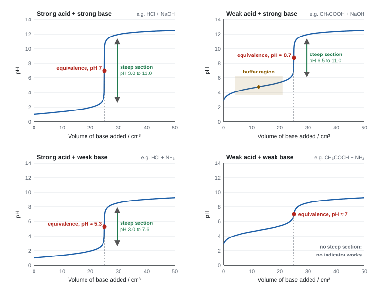
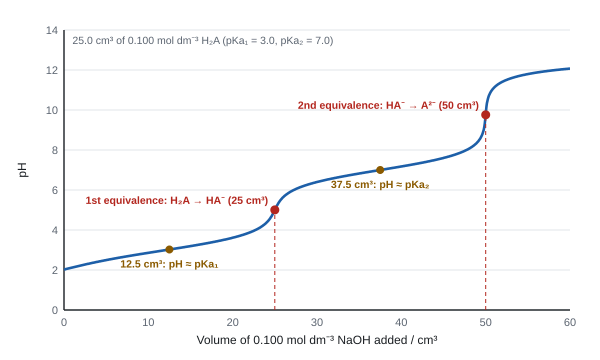
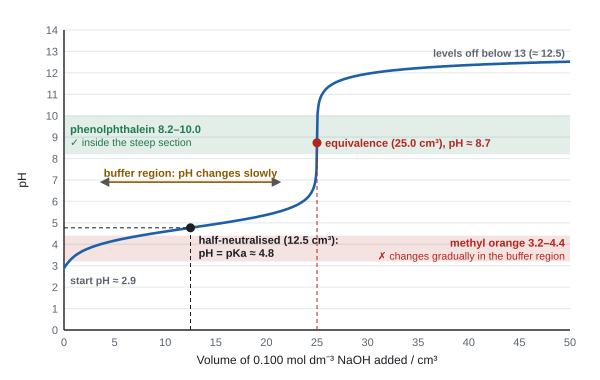

Acid-base equilibria
Acids and bases are all about protons moving from one particle to another. This topic turns that idea into numbers: the pH scale, the ionic product of water, the acid dissociation constant Ka, the shapes of titration curves, and the buffers that keep the pH of your blood almost perfectly steady.
Spec14.1Brønsted–Lowry acids and bases
Know that a Brønsted–Lowry acid donates a proton, a base accepts one, and that an acid-base reaction is a proton transfer.
The definitions
- A Brønsted–Lowry acid is a proton donor. A Brønsted–Lowry base is a proton acceptor.
- "Proton" here means an H⁺ ion: a hydrogen atom that has lost its electron. Never write "hydrogen atom".
- An acid-base reaction is a proton transfer from the acid to the base. You can't have one without the other: the acid only donates if something accepts.
Examples
| Reaction | Acid (donates H⁺) | Base (accepts H⁺) |
|---|---|---|
| HCl(g) + H₂O(l) → H₃O⁺(aq) + Cl⁻(aq) | HCl | H₂O |
| NH₃(aq) + H₂O(l) ⇌ NH₄⁺(aq) + OH⁻(aq) | H₂O | NH₃ |
| HCl(g) + NH₃(g) → NH₄Cl(s) | HCl | NH₃ |
| CH₃COOH(aq) + OH⁻(aq) → CH₃COO⁻(aq) + H₂O(l) | CH₃COOH | OH⁻ |
- In water, acids form the oxonium ion H₃O⁺ (also called hydronium or hydroxonium). H⁺(aq) is shorthand for H₃O⁺(aq); mark schemes accept either.
- Water can act as an acid or a base, depending on its partner: it accepts a proton from HCl but donates one to NH₃. Species like this are amphoteric (other examples: HCO₃⁻, H₂PO₄⁻, HSO₄⁻).
- "proton donor" / "proton acceptor"; "transfer of a proton / H⁺".
- An acid "donates hydrogen ions and becomes an anion" (for a neutral acid like HCl or CH₃COOH).
- In an MCQ, check that the species you pick acts as an acid (or base) on the side of the equation the question means.
Often asked as: MCQ "which species is acting as a Brønsted–Lowry base?", identify the acid and base in a given equation, role of water.
- Writing "hydrogen atom" or "hydrogen" for proton.
- Thinking water is always neutral in these reactions: in NH₃ + H₂O, water is the acid.
- Putting a charge on only one product of a proton transfer when both change charge (HCl + H₂O gives H₃O⁺ and Cl⁻).
- An acid-base indicator is itself a weak acid, HIn ⇌ H⁺ + In⁻, with different colours for HIn and In⁻ (WCH14 Oct 2024).
- A carboxylic acid can act as a base when mixed with a stronger acid: it accepts a proton to become RCOOH₂⁺ (WCH14 Jun 2025). See 14.2.
Spec14.2Conjugate acid-base pairs
Identify the conjugate acid-base pairs in a Brønsted–Lowry reaction.
What a conjugate pair is
- When an acid loses a proton, what's left can accept one back: it is the conjugate base of that acid. When a base gains a proton, it becomes its conjugate acid.
- The two members of a pair differ by exactly one H⁺. Every acid-base equilibrium contains two pairs:
acid 1 + base 2 ⇌ base 1 + acid 2
Worked pairs
| Equation | Pair 1 (acid / conjugate base) | Pair 2 (conjugate acid / base) |
|---|---|---|
| CH₃COOH + H₂O ⇌ CH₃COO⁻ + H₃O⁺ | CH₃COOH / CH₃COO⁻ | H₃O⁺ / H₂O |
| NH₃ + H₂O ⇌ NH₄⁺ + OH⁻ | H₂O / OH⁻ | NH₄⁺ / NH₃ |
| HNO₃ + H₂SO₄ ⇌ H₂NO₃⁺ + HSO₄⁻ | H₂SO₄ / HSO₄⁻ | H₂NO₃⁺ / HNO₃ |
| H₂PO₄⁻ + OH⁻ ⇌ HPO₄²⁻ + H₂O | H₂PO₄⁻ / HPO₄²⁻ | H₂O / OH⁻ |
- In the third row, nitric acid is acting as a base, because sulfuric acid is the stronger acid. The stronger acid is always the one that donates.
How to label pairs in an answer
- Find the two species on each side that differ by one H⁺.
- Label them acid 1 / base 1 and acid 2 / base 2, or join each pair with a line. Lines or the words "conjugate acid" and "conjugate base" are safest.
- Check the charges: removing H⁺ lowers the charge by one (neutral acid → 1− base; 1+ acid → neutral base).
Worked example: one weak acid protonating another
Methanoic acid (pKa 3.75) is mixed with propanoic acid (pKa 4.87) in an unreactive solvent. Write the equation and label the pairs.
The smaller pKa means methanoic acid is the stronger acid, so it donates and propanoic acid accepts:
HCOOH + CH₃CH₂COOH ⇌ HCOO⁻ + CH₃CH₂COOH₂⁺
acid 1 + base 2 ⇌ base 1 + acid 2
Pairs: HCOOH / HCOO⁻ and CH₃CH₂COOH₂⁺ / CH₃CH₂COOH.
- Pairs credited when "labelled B1 A2 A1 B2 or joined by lines"; any clear indication of linkage.
- The equation must have correct charges: CH₃COOH + CH₂ClCOOH ⇌ CH₃COOH₂⁺ + CH₂ClCOO⁻ (chloroethanoic acid is stronger, so it donates).
- Each correct pair is often one mark; all four species identified correctly is the second.
Often asked as: identify both pairs in an equation; write the equation for one acid reacting with another (use the Ka/pKa table to decide which donates); MCQ on the conjugate base of a given species.
- Linking an acid with the other acid instead of with its own conjugate base.
- Getting charges wrong: the conjugate base of a neutral acid is negative, and the conjugate base of a positive acid (like pyridinium, C₅H₅NH⁺) is neutral.
- Not using the Ka table that the question gives: it tells you which acid is stronger and so which one donates.
- Carboxylic acids as bases: protonated acids such as CH₃COOH₂⁺ appear in equations when two acids are mixed, and this has come up on four papers (WCH14 Jun 2024).
- Conjugate pairs in phosphate systems: H₂PO₄⁻ / HPO₄²⁻ (WCH14 Oct 2020).
Spec14.3Definition of pH
Define pH.
The definition
pH = −log₁₀[H⁺(aq)]
- In words: pH is the negative logarithm, to base 10, of the hydrogen ion concentration (in mol dm⁻³). [H₃O⁺] in place of [H⁺] is equally correct.
- Square brackets mean "concentration of … in mol dm⁻³".
- Because it is a log scale, a change of 1 pH unit = a factor of 10 in [H⁺]. pH 3 has 10 times the [H⁺] of pH 4 and 100 times that of pH 5.
- Lower pH = higher [H⁺] = more acidic.
- "pH = −log₁₀[H₃O⁺]"; ACCEPT lg or log, and [H⁺]; or "negative log to the base 10 of the hydrogen ion / oxonium ion concentration".
- Square brackets are needed for concentration.
Often asked as: define pH (1 mark); as the first step of nearly every Topic 14 calculation.
- Missing the minus sign, or using ln (natural log) instead of log₁₀.
- Writing "the concentration of hydrogen" (it's hydrogen ions).
- Negative pH: if [H⁺] is greater than 1 mol dm⁻³, the pH is negative. 2.0 mol dm⁻³ HNO₃ has pH = −log 2.0 = −0.30 (WCH14 Oct 2025). There is nothing special about pH 0: the 0–14 scale is just the common range.
Spec14.4Calculating pH from [H⁺]
Calculate pH from the hydrogen ion concentration.
Method
- Press (−) log ( [H⁺] ) on the calculator. Enter powers of ten with the ×10ˣ / EXP key, not by typing "× 10 ^".
- Give pH to 2 decimal places unless told otherwise (mark schemes accept 2 or 3 significant figures; 1 s.f. is never enough).
Worked example: pH from [H⁺]
(a) [H⁺] = 3.2 × 10⁻³ mol dm⁻³. pH = −log(3.2 × 10⁻³) = 2.49.
(b) [H⁺] = 2.0 mol dm⁻³. pH = −log(2.0) = −0.30. A negative pH is fine.
(c) [H⁺] = 1.0 × 10⁻⁹ mol dm⁻³. pH = 9.00. This solution is alkaline; it still contains some H⁺.
Sense-check every answer. An acid must have pH below 7 (at 25 °C), and a stronger or more concentrated acid must have a lower pH. Mark schemes refuse any pH ≥ 7 for an acid even with error carried forward.
- 2–3 s.f. acceptable (e.g. "2.68 or 2.7"); IGNORE s.f. except 1 s.f.
- "TE … but do not award a pH ≥ 7" for an acid solution.
Often asked as: the last step of weak acid, buffer and mixture calculations; MCQ with distractors that forget the minus sign.
- Forgetting to take the square root of Ka × [HA] before taking the log (weak acids, 14.9).
- Rounding [H⁺] early, then taking the log: keep the full calculator value.
Spec14.5Calculating [H⁺] from pH
Calculate [H⁺] in mol dm⁻³ from pH using [H⁺] = 10⁻ᵖᴴ.
Method
[H⁺] = 10−pH
- On the calculator: SHIFT log (10ˣ) then (−) pH.
- The answer has units of mol dm⁻³.
Worked example: [H⁺] from pH, and diluting to a target pH
(a) pH = 3.40. [H⁺] = 10⁻³·⁴⁰ = 4.0 × 10⁻⁴ mol dm⁻³.
(b) 25.0 cm³ of HCl has pH 1.00. What volume of water must be added to raise the pH to 2.00?
[H⁺] goes from 0.100 to 0.0100 mol dm⁻³: a tenfold dilution (HCl is fully dissociated, so [H⁺] ∝ concentration).
Final volume = 25.0 × 10 = 250 cm³, so add 225 cm³ of water.
- Evaluate the power: "[H⁺] = 10^−1.125 = 0.075 mol dm⁻³". Writing 10^−1.125 and stopping doesn't score.
- Dilution questions: final volume first, then subtract the starting volume for the water added (2–3 s.f.).
Often asked as: [H⁺] from a measured pH as the first step of finding Ka (14.14); dilution to a given pH.
- Rounding 10⁻⁰·⁹⁷ = 0.107 to "0.1" and then doubling for sulfuric acid. Use the value the pH gives you.
- Giving the final volume when the question asked for the volume of water added.
Spec14.6Strong and weak acids: degree of dissociation
Understand the difference between strong and weak acids in terms of how far they dissociate.
Strong v weak
- A strong acid is (almost) completely dissociated into ions in water. Use a one-way arrow:
HCl(aq) → H⁺(aq) + Cl⁻(aq)
Examples: HCl, HNO₃, HBr, HI, H₂SO₄ (first proton). - A weak acid is only partially dissociated (slightly ionised). Most molecules stay as HA, so use ⇌:
CH₃COOH(aq) ⇌ CH₃COO⁻(aq) + H⁺(aq)
Examples: carboxylic acids, HCN, H₂CO₃, NH₄⁺, HF. In 0.1 mol dm⁻³ ethanoic acid only about 1 molecule in 80 is dissociated. - For the same concentration, the weak acid has a lower [H⁺], so a higher pH, lower electrical conductivity and slower reactions with metals or carbonates. The total amount of acid that a base can neutralise is the same.
Strength is not concentration
| Meaning | |
|---|---|
| Strong / weak | how far the acid dissociates (a fixed property at a given temperature) |
| Concentrated / dilute | how much acid is dissolved per dm³ |
So 0.001 mol dm⁻³ HCl is a dilute strong acid; 10 mol dm⁻³ ethanoic acid is a concentrated weak acid.
Sulfuric acid
- H₂SO₄ → H⁺ + HSO₄⁻ is complete (strong).
- HSO₄⁻ ⇌ H⁺ + SO₄²⁻ is partial, and the high [H⁺] from the first step pushes this second equilibrium to the left (suppresses it).
- So 0.100 mol dm⁻³ H₂SO₄ has [H⁺] a little above 0.100 mol dm⁻³ (measured pH about 0.97), not 0.200.
- "a weak acid is dissociated (into its ions) to a small extent and a strong acid is (almost) completely dissociated"; ALLOW "partially ionised" / "fully ionised".
- A weak acid solution "contains a significant proportion of undissociated acid".
- Sulfuric acid: "the first ionisation is complete … the high [H⁺] from the first suppresses the second equilibrium".
Often asked as: define a weak acid (1–2 marks); compare the pH of equimolar strong and weak acids; explain why diluting changes their pH differently (14.13).
- Describing pH or "position of equilibrium" instead of dissociation/ionisation when asked to define strong and weak.
- Mixing up "weak" with "dilute".
- Vague sulfuric acid answers that don't say which of its two equilibria is complete.
- Inductive effects: an electronegative atom near the COOH group makes the acid stronger. In chloroethanoic acid the Cl is electron-withdrawing, so it pulls electron density away from the O–H bond (weakening it) and stabilises the COO⁻ ion by spreading its charge. Ka order: CH₃COOH < CH₂ClCOOH < CHCl₂COOH < CCl₃COOH. Alkyl groups push electrons the other way, which is why propanoic acid (pKa 4.87) is slightly weaker than ethanoic acid (pKa 4.76). "More hydrogen bonding" is not accepted as the reason (WCH14 Jun 2025).
- The extra OH in lactic acid is electron-withdrawing, which is why lactic acid is stronger than propanoic acid. The OH itself is not acidic (WCH14 Oct 2022).
Spec14.7pH of a strong acid
Calculate the pH of a strong acid.
Method
- A strong monoprotic acid is fully dissociated, so [H⁺] = concentration of the acid. Then pH = −log[H⁺].
- For a mixture of strong acid and strong base, work in moles:
- moles H⁺ and moles OH⁻ at the start;
- subtract to find which is in excess and by how much;
- divide by the total volume (in dm³) to get the concentration;
- take −log (acid in excess) or go via Kw (alkali in excess, 14.11).
Worked example: strong acid, and a strong acid–strong base mixture
(a) 0.0250 mol dm⁻³ HCl: [H⁺] = 0.0250, pH = 1.60.
(b) 25.0 cm³ of 0.100 mol dm⁻³ HCl is mixed with 15.0 cm³ of 0.100 mol dm⁻³ NaOH.
moles H⁺ = 0.100 × 25.0/1000 = 2.50 × 10⁻³ mol
moles OH⁻ = 0.100 × 15.0/1000 = 1.50 × 10⁻³ mol
excess H⁺ = 1.00 × 10⁻³ mol in 40.0 cm³
[H⁺] = 1.00 × 10⁻³ ÷ 0.0400 = 0.0250 mol dm⁻³, pH = 1.60.
For sulfuric acid in a neutralisation (moles) calculation, 1 mol H₂SO₄ supplies 2 mol H⁺. For the pH of the acid on its own, read the question: it may tell you to assume both protons dissociate, or give you a measured pH.
0.0250 mol dm−3 nitric acid: [H+] = 0.0250 mol dm−3, so pH = −log 0.0250 = 1.60.
A hydrochloric acid solution has pH 2.45: [H+] = 10−2.45 = 3.55 × 10−3 mol dm−3, and that is also the concentration of the acid.
- Mixtures: "moles of H⁺ – moles of OH⁻", "÷ total volume", then pH.
- With H₂SO₄ and NaOH: moles H⁺ = 2 × moles H₂SO₄.
Often asked as: MCQ on the pH after a tenfold dilution or concentration change; pH of a mixture; pH after part of an acid has reacted.
- Forgetting to subtract the moles that reacted, or subtracting moles of H₂SO₄ instead of moles of H⁺.
- Dividing by the volume of one solution instead of the total volume.
- Strong acid–strong base mixtures and the dibasic nature of H₂SO₄ (WCH14 Oct 2024). Mixtures with excess acid (WCH14 Oct 2025).
Spec14.8The acid dissociation constant, Ka
Write the expression for Ka for a weak acid.
The expression
For a weak acid HA(aq) ⇌ H⁺(aq) + A⁻(aq):
Ka = [H⁺][A⁻] ÷ [HA] units: mol dm⁻³
- For ethanoic acid: Ka = [H⁺][CH₃COO⁻] ÷ [CH₃COOH].
- Water does not appear (it is the solvent; its concentration is effectively constant).
- All concentrations are equilibrium concentrations.
- Bigger Ka = stronger acid (more dissociated). Ka depends only on temperature.
| Acid | Ka / mol dm⁻³ | pKa |
|---|---|---|
| methanoic, HCOOH | 1.8 × 10⁻⁴ | 3.75 |
| benzoic, C₆H₅COOH | 6.3 × 10⁻⁵ | 4.20 |
| ethanoic, CH₃COOH | 1.7 × 10⁻⁵ | 4.76 |
| propanoic, CH₃CH₂COOH | 1.3 × 10⁻⁵ | 4.87 |
| carbonic, H₂CO₃ | 4.3 × 10⁻⁷ | 6.37 |
(Values vary slightly between data sources: use whatever the question gives.)
- "Ka = [H₃O⁺][CH₃COO⁻] ÷ [CH₃COOH]"; ACCEPT [H⁺].
- DO NOT AWARD HA and A⁻ unless you have defined them for that acid; round or curly brackets; the charge written outside the square bracket.
Often asked as: write Ka for a named or unfamiliar acid (hexanoic, gluconic, the pyridinium ion, Tris-H⁺), usually 1 mark before a calculation.
- Writing the dissociation equation when the expression is asked (examiners call it "the most common error").
- Including water, or using round brackets.
- Ka for positive weak acids, such as the pyridinium ion: C₅H₅NH⁺ ⇌ C₅H₅N + H⁺, so Ka = [C₅H₅N][H⁺] ÷ [C₅H₅NH⁺] (WCH14 Jun 2024).
Spec14.9pH of a weak acid
Calculate the pH of a weak acid from Ka or pKa, stating the assumptions (no quadratics needed).
Method
- If you are given pKa, find Ka = 10⁻ᵖᴷᵃ.
- Make two assumptions:
- [H⁺] = [A⁻]: all the H⁺ comes from the acid; the tiny amount from water is ignored.
- [HA]equilibrium = [HA]initial: the acid dissociates so little that its concentration hardly changes.
- Ka = [H⁺]² ÷ [HA], so [H⁺] = √(Ka × [HA]).
- pH = −log[H⁺].
Worked example: pH of weak acids
(a) 0.100 mol dm⁻³ ethanoic acid, Ka = 1.7 × 10⁻⁵ mol dm⁻³.
[H⁺] = √(1.7 × 10⁻⁵ × 0.100) = 1.30 × 10⁻³ mol dm⁻³, pH = 2.88.
(b) 0.0500 mol dm⁻³ propanoic acid, pKa = 4.87.
Ka = 10⁻⁴·⁸⁷ = 1.35 × 10⁻⁵ mol dm⁻³; [H⁺] = √(1.35 × 10⁻⁵ × 0.0500) = 8.21 × 10⁻⁴; pH = 3.09.
(c) What mass of ethanoic acid (Mr 60.0) must be dissolved to make 250 cm³ of solution of pH 3.00?
[H⁺] = 1.00 × 10⁻³; [HA] = [H⁺]² ÷ Ka = 1.00 × 10⁻⁶ ÷ 1.7 × 10⁻⁵ = 0.0588 mol dm⁻³
moles = 0.0588 × 0.250 = 0.0147 mol; mass = 0.0147 × 60.0 = 0.88 g.
When the assumptions fail
- The second assumption fails when the acid is not very weak (Ka bigger than about 10⁻³) or very dilute: then a significant fraction dissociates, so [HA]eqm is noticeably less than [HA]initial.
- The calculated [H⁺] is then too high, so the calculated pH is lower than the measured pH. The error is bigger for the stronger acid.
\( [\mathrm{H^+}]^2 = K_a \times [\mathrm{HA}] = 1.7 \times 10^{-5} \times 0.0500 = 8.5 \times 10^{-7} \)
\( [\mathrm{H^+}] = \sqrt{8.5 \times 10^{-7}} = 9.22 \times 10^{-4}\ \mathrm{mol\,dm^{-3}} \)
pH = −log(9.22 × 10−4) = 3.04.
A strong acid of the same concentration would have pH 1.30. Only about 2% of the ethanoic acid molecules are dissociated.
- "[H⁺] = √(Ka × [HA])", then −log; correct answer with no working scores full marks.
- Assumptions (any one per mark): "degree of dissociation is very small / negligible"; "[CH₃COOH]eqm = [CH₃COOH]initial"; "[H⁺] = [CH₃COO⁻]"; "all the hydrogen ions come from the acid / none from water".
- Questioning validity: "[HA]equilibrium is lower than [HA]initial because dissociation is significant", so the calculated pH is lower than the measured one.
Often asked as: pH from Ka/pKa (2–3 marks); state one or two assumptions; MCQ on which assumption is invalid; 6-mark comparing calculated and measured pH; mass of acid for a given pH.
- Giving the same assumption twice in different words: give one about water (H⁺ = A⁻) and one about the degree of dissociation.
- Forgetting to convert pKa to Ka, or g dm⁻³ to mol dm⁻³ (divide by Mr).
- Blaming the dissociation of water for a difference between measured and calculated pH: the real reason is that dissociation of the acid is not negligible.
- An acid whose dissociation is not negligible: dichloroethanoic acid, Ka = 4.5 × 10⁻² mol dm⁻³. The simple method gives a pH that is too low (WCH14 Jun 2024).
- Working backwards to the mass of acid needed for a given pH (WCH14 Oct 2022). With the assumption, the mass is an underestimate, because [HA]eqm < [HA]initial means more acid is really needed.
Spec14.10The ionic product of water, Kw
Define Kw.
Where Kw comes from
- Water ionises very slightly: H₂O(l) ⇌ H⁺(aq) + OH⁻(aq)
- [H₂O] is effectively constant, so it is absorbed into the constant:
Kw = [H⁺][OH⁻] = 1.00 × 10⁻¹⁴ mol² dm⁻⁶ at 298 K
- In pure water [H⁺] = [OH⁻], so [H⁺] = √Kw = 1.00 × 10⁻⁷ mol dm⁻³ and pH = 7.00 at 298 K.
- Neutral means [H⁺] = [OH⁻], not "pH 7". Acidic: [H⁺] > [OH⁻]. Alkaline: [OH⁻] > [H⁺].
Kw changes with temperature
- The ionisation of water is endothermic (it breaks bonds). Raising the temperature shifts the equilibrium right, so Kw increases.
- At higher temperature [H⁺] is bigger, so the pH of pure water falls below 7, but the water is still neutral because [H⁺] still equals [OH⁻].
| Temperature | Kw / mol² dm⁻⁶ | pH of pure water |
|---|---|---|
| 283 K (10 °C) | 2.9 × 10⁻¹⁵ (pKw 14.53) | 7.27 |
| 298 K (25 °C) | 1.00 × 10⁻¹⁴ | 7.00 |
| 313 K (40 °C) | 2.9 × 10⁻¹⁴ | 6.77 |
| 323 K (50 °C) | 5.5 × 10⁻¹⁴ | 6.63 |
Worked example: pure water at 313 K
Kw at 313 K = 2.92 × 10⁻¹⁴ mol² dm⁻⁶.
[H⁺] = √(2.92 × 10⁻¹⁴) = 1.71 × 10⁻⁷ mol dm⁻³, pH = 6.77. The water is neutral: [H⁺] = [OH⁻].
- "Kw = [H⁺][OH⁻]" with units mol² dm⁻⁶.
- Temperature: "the dissociation of water is endothermic, so the concentration of hydrogen ions is higher at 75 °C"; "in pure water the concentrations of hydrogen ions and hydroxide ions are always equal".
- At a temperature other than 298 K use the pKw you are given: pH = pKw − pOH.
Often asked as: MCQ on the pH of pure water at 40 °C or 75 °C; "is water at pH 6.6 acidic?"; pH of NaOH at 283 K using pKw = 14.53.
- Saying hot water is "acidic" because its pH is below 7.
- Using 14 for pKw when the question gives a different value.
- Including [H₂O] in the Kw expression.
- Neutral water that isn't pH 7 above 25 °C, and the endothermic explanation (WCH14 Jun 2025). At 100 °C Kw is about 5 × 10⁻¹³, so pure water has pH about 6.1 (WCH14 Jan 2023).
Spec14.11pH of a strong base
Calculate the pH of a strong base from its concentration, using Kw or pKw.
Method
- [OH⁻] from the concentration. NaOH and KOH give [OH⁻] = c. Ba(OH)₂ and other Group 2 hydroxides give [OH⁻] = 2c.
- Either [H⁺] = Kw ÷ [OH⁻], then pH = −log[H⁺];
or pOH = −log[OH⁻], then pH = pKw − pOH (pKw = 14.00 at 298 K).
Worked example: pH of strong bases
(a) 0.0500 mol dm⁻³ NaOH at 298 K: [H⁺] = 1.00 × 10⁻¹⁴ ÷ 0.0500 = 2.00 × 10⁻¹³; pH = 12.70.
(b) 0.0200 mol dm⁻³ Ba(OH)₂: [OH⁻] = 0.0400; pOH = 1.40; pH = 14.00 − 1.40 = 12.60.
(c) 0.100 mol dm⁻³ NaOH at 283 K, where pKw = 14.53: pOH = 1.00, pH = 13.53.
(d) 25.0 cm³ of 0.100 mol dm⁻³ HCl + 30.0 cm³ of 0.100 mol dm⁻³ NaOH:
excess OH⁻ = 3.00 × 10⁻³ − 2.50 × 10⁻³ = 5.0 × 10⁻⁴ mol in 55.0 cm³
[OH⁻] = 9.09 × 10⁻³ mol dm⁻³; [H⁺] = 1.00 × 10⁻¹⁴ ÷ 9.09 × 10⁻³ = 1.10 × 10⁻¹²; pH = 11.96.
Strong bases such as NaOH are fully dissociated, so 0.0500 mol dm−3 NaOH has [OH−] = 0.0500 mol dm−3.
Use Kw: \( [\mathrm{H^+}] = \dfrac{K_w}{[\mathrm{OH^-}]} = \dfrac{1.00 \times 10^{-14}}{0.0500} = 2.00 \times 10^{-13}\ \mathrm{mol\,dm^{-3}} \).
pH = −log(2.00 × 10−13) = 12.70.
Watch for bases that release two hydroxide ions: 0.0200 mol dm−3 Ba(OH)2 gives [OH−] = 0.0400 mol dm−3 and pH 12.60.
- "[OH⁻] = 0.4 mol dm⁻³" for 0.2 mol dm⁻³ Ba(OH)₂, pOH = 0.40, pH = 13.6.
- After a reaction that uses up OH⁻ (e.g. ester hydrolysis): moles NaOH − moles used, new concentration, "pH = 14 − (−log[OH⁻])".
Often asked as: pH of NaOH or Ba(OH)₂; pH of an alkali left over after a reaction or titration; MCQ at a non-standard temperature.
- Taking −log[OH⁻] and calling it the pH.
- Forgetting the 2 for Ba(OH)₂, or forgetting to subtract the OH⁻ that has been used up.
- Not dividing by the final (combined) volume.
- pH of the excess NaOH after an ester hydrolysis: subtract the moles that reacted first; "13.99" from the original concentration scored nothing (WCH14 Jan 2020).
Spec14.12pKa and pKw
Define pKa and pKw.
Definitions
pKa = −log₁₀ Ka Ka = 10−pKa
pKw = −log₁₀ Kw = 14.00 at 298 K
- The "p" means "−log₁₀ of".
- Smaller pKa = larger Ka = stronger acid. A difference of 1 in pKa is a factor of 10 in Ka.
- pKa values are easier to compare than Ka values with negative powers.
- At 298 K, pH + pOH = 14.00 (more generally pH + pOH = pKw).
Worked example: converting
(a) pKa = 5.25 → Ka = 10⁻⁵·²⁵ = 5.6 × 10⁻⁶ mol dm⁻³.
(b) Ka = 4.5 × 10⁻² mol dm⁻³ → pKa = 1.35.
Which acid is stronger? (b), because its pKa is smaller.
- "inverse log(−5.25) to 2 s.f." (5.6 × 10⁻⁶) and "−log(4.5 × 10⁻²) to 3 s.f." (1.35). DO NOT AWARD 6 × 10⁻⁶ or 1.4.
- pKa and pKw have no units.
Often asked as: conversions inside longer calculations; rank acids by pKa.
- Rounding to 1 s.f., or giving s.f. inconsistent with the data.
- Thinking a bigger pKa means a stronger acid.
Spec14.13Analysing pH data: acids, bases, salts and dilution
Interpret pH measurements of equimolar strong and weak acids and bases and of salts, and compare the pH of strong and weak acids after 10, 100 and 1000-fold dilution.
Equimolar acids and bases
At the same concentration and temperature, lower pH = stronger acid; higher pH = stronger base. Typical values for 0.100 mol dm⁻³ solutions at 298 K:
| Solution (0.100 mol dm⁻³) | pH | Why |
|---|---|---|
| HCl | 1.00 | strong acid, [H⁺] = 0.100 |
| CH₃COOH | 2.9 | weak acid, ~1% dissociated |
| NH₃ | 11.1 | weak base, partly protonated |
| NaOH | 13.0 | strong base, [OH⁻] = 0.100 |
Salts are not all neutral
The pH of a salt solution depends on which acid and base it came from:
| Salt from | Example | pH (0.1 mol dm⁻³) | Reason |
|---|---|---|---|
| strong acid + strong base | NaCl, KNO₃ | 7 | neither ion reacts with water |
| weak acid + strong base | CH₃COONa | about 8.9 | CH₃COO⁻ + H₂O ⇌ CH₃COOH + OH⁻ |
| strong acid + weak base | NH₄Cl | about 5.1 | NH₄⁺ + H₂O ⇌ NH₃ + H₃O⁺ |
| weak acid + weak base | CH₃COONH₄ | about 7 | both ions react, about equally |
- The anion of a weak acid is a weak base; the cation of a weak base is a weak acid. That's why the equivalence point of a titration is not always at pH 7 (14.15).
Dilution: strong v weak acid
| Dilution of 0.100 mol dm⁻³ | ×1 | ×10 | ×100 | ×1000 |
|---|---|---|---|---|
| HCl, pH | 1.00 | 2.00 | 3.00 | 4.00 |
| CH₃COOH, pH | 2.88 | 3.38 | 3.88 | about 4.4 |
- Strong acid: each tenfold dilution divides [H⁺] by 10, so the pH rises by 1 unit.
- Weak acid: the pH rises by only about 0.5 units per tenfold dilution. Two ways to see why:
- [H⁺] = √(Ka × c), so dividing c by 10 divides [H⁺] by √10 ≈ 3.2, and log 3.2 ≈ 0.5.
- Le Chatelier: diluting shifts HA ⇌ H⁺ + A⁻ to the right (more particles side), so the acid dissociates more and partly makes up for the dilution.
- At great dilution the weak acid's dissociation is no longer small (about 12% at 0.0001 mol dm⁻³), so the simple formula slightly underestimates the pH.
- Diluting an acid can never take its pH above 7: at around 10⁻⁸ mol dm⁻³ the H⁺ from water dominates and the pH just approaches 7.
- Dilution (4 points): HCl "fully dissociated"; "a decrease in concentration by a factor of 10 decreases [H⁺] by a factor of 10" so pH increases by 1; ethanoic acid "not fully dissociated (so its pH is much higher)"; "when diluted, ethanoic acid dissociates more (so the pH does not change so much)". IGNORE "pH increases by 0.5" on its own.
- Ammonium chloride: "NH₄⁺ + H₂O ⇌ NH₃ + H₃O⁺".
Often asked as: explain the different pH changes on dilution; rank the pH of several solutions (MCQ); explain why a salt solution is acidic or alkaline.
- Saying dilution "decreases the pH". Diluting an acid raises its pH.
- Writing NH₄Cl, rather than the NH₄⁺ ion, in the hydrolysis equation ("the majority used ammonium chloride").
- Comparing acids of different concentrations as if pH alone showed strength.
- Salt solutions with pH ≠ 7, with the hydrolysis equation for the ion that reacts (WCH14 Jun 2022).
Spec14.14Ka from experimental data
Calculate Ka of a weak acid from the pH of a solution made from a known mass of the acid.
Method
- Concentration of the acid: moles = mass ÷ Mr; c = moles ÷ volume in dm³.
- [H⁺] = 10⁻ᵖᴴ from the measured pH.
- Assume [A⁻] = [H⁺] and [HA] ≈ c (dissociation small).
- Ka = [H⁺]² ÷ c, units mol dm⁻³. Then pKa = −log Ka if asked.
- If dissociation is not small, the better value uses [HA] = c − [H⁺].
Worked example: Ka from mass and pH
0.600 g of ethanoic acid (Mr 60.0) is dissolved in water and made up to 250 cm³. The pH is 3.08.
moles = 0.600 ÷ 60.0 = 0.0100 mol; c = 0.0100 ÷ 0.250 = 0.0400 mol dm⁻³
[H⁺] = 10⁻³·⁰⁸ = 8.32 × 10⁻⁴ mol dm⁻³
Ka = (8.32 × 10⁻⁴)² ÷ 0.0400 = 1.7 × 10⁻⁵ mol dm⁻³ (pKa = 4.76)
Percentage dissociated = 8.32 × 10⁻⁴ ÷ 0.0400 × 100 = 2.1%, so the assumption is fine.
Worked example: checking the assumption
0.244 g of benzoic acid (Mr 122) in 100 cm³ of solution has pH 2.94.
c = 0.00200 mol ÷ 0.100 dm³ = 0.0200 mol dm⁻³; [H⁺] = 10⁻²·⁹⁴ = 1.15 × 10⁻³ mol dm⁻³
With [HA] = c: Ka = (1.15 × 10⁻³)² ÷ 0.0200 = 6.6 × 10⁻⁵ mol dm⁻³
Percentage dissociated = 5.7%. Using [HA] = 0.0200 − 0.00115 = 0.01885 gives Ka = 7.0 × 10⁻⁵ mol dm⁻³, a better value.
0.200 mol dm−3 propanoic acid has pH 2.79. Find Ka and pKa.
[H+] = 10−2.79 = 1.62 × 10−3 mol dm−3 = [A−].
\( K_a = \dfrac{(1.62 \times 10^{-3})^2}{0.200} = 1.32 \times 10^{-5}\ \mathrm{mol\,dm^{-3}} \), so pKa = 4.88.
- Steps credited: concentration of acid from mass ÷ Mr ÷ volume; [H⁺] from pH; Ka expression; Ka with units.
- Phosphoric acid type: "[H⁺] = 10^−1.2 = 0.0631", "assume [H₂PO₄⁻] = [H₃O⁺]", Ka₁ with units.
Often asked as: Ka from a mass and a pH; Ka of a polyprotic acid's first dissociation; part of Core Practical 11 questions.
- Using the mass concentration (g dm⁻³) as if it were mol dm⁻³.
- Using the Mr of the ion instead of the acid or salt.
- Using the initial concentration without comment when the acid is quite strong: the best answers subtract [H⁺].
- For a relatively strong acid such as H₃PO₄, the best answer uses the equilibrium concentration [H₃PO₄] = c − [H⁺]; "only a very few" did this (WCH14 Oct 2020).
Spec14.15Titration curves
Draw and interpret pH titration curves for all combinations of strong and weak monoprotic acids and bases, and apply the same ideas to diprotic acids and bases.
Reading a pH curve
A pH curve plots pH (y-axis) against volume of solution added (x-axis). Things to read off:
- Starting pH: tells you what is in the flask (strong acid about 1; weak acid about 3).
- Equivalence point: where the moles of acid and base match the equation. It is the middle of the steep (vertical) section. Its volume gives you the concentration; its pH tells you which salt is present.
- Steep section: near equivalence, almost no H⁺ (or OH⁻) is left, so one drop of titrant is a large fraction of what remains and the pH jumps several units.
- Final pH: approaches (but stays below) the pH of the solution being added, because it is diluted.

The four combinations
| Acid + base | Start pH | Equivalence pH | Steep section | End pH |
|---|---|---|---|---|
| Strong + strong (HCl + NaOH) | about 1 | 7 | about 3 to 11 | about 12–13 |
| Weak + strong (CH₃COOH + NaOH) | about 3 | above 7 (about 8.7) | about 6.5 to 11 | about 12–13 |
| Strong + weak (HCl + NH₃) | about 1 | below 7 (about 5.3) | about 3 to 7.5 | about 9–10 |
| Weak + weak (CH₃COOH + NH₃) | about 3 | about 7 | none | about 9–10 |
- Why the equivalence pH differs: at equivalence only the salt is present. CH₃COO⁻ is a weak base (pH > 7); NH₄⁺ is a weak acid (pH < 7). See the salt table in 14.13.
- Weak acid + strong base has an initial small rise, then a gently sloping buffer region (14.21), then the steep section.
Why the equivalence point of a weak acid is above 7 (extension)
At equivalence, 25.0 cm³ of 0.100 mol dm⁻³ CH₃COOH + 25.0 cm³ of NaOH gives 0.0500 mol dm⁻³ CH₃COO⁻, which reacts slightly with water: CH₃COO⁻ + H₂O ⇌ CH₃COOH + OH⁻. Using Kb = Kw ÷ Ka = 5.9 × 10⁻¹⁰: [OH⁻] = √(Kb × c) = 5.4 × 10⁻⁶ mol dm⁻³, so pOH = 5.27 and pH = 8.73. You won't be asked for this calculation, but you must be able to say that "the salt of a weak acid is basic".
Acid added to alkali
If the acid is in the burette and the alkali in the flask, the curve is the same shape upside down: it starts high and falls. Check which solution is being added before you sketch.
Diprotic acids and bases
- A diprotic acid H₂A gives up two protons in turn: H₂A + OH⁻ → HA⁻ + H₂O, then HA⁻ + OH⁻ → A²⁻ + H₂O.
- If the two pKa values are well apart, the curve has two steep sections: the second equivalence volume is twice the first.
- Half-way to each equivalence point, pH ≈ pKa₁ and pH ≈ pKa₂.
- A diprotic base behaves the same way. Sodium carbonate titrated with HCl shows two steps: CO₃²⁻ → HCO₃⁻ (near pH 8.3) and then HCO₃⁻ → H₂CO₃ (CO₂ + H₂O, near pH 3.7).
- With a strong diprotic acid such as H₂SO₄ titrated with NaOH, both protons are removed together and there is one steep section, at the volume for 2 mol NaOH per mol H₂SO₄.

Worked example: reading a curve
25.0 cm³ of propanoic acid is titrated with 0.100 mol dm⁻³ NaOH. The steep section is centred on 20.0 cm³. At 10.0 cm³ the pH is 4.87.
(a) Concentration of the acid: moles NaOH = 0.100 × 0.0200 = 2.00 × 10⁻³ mol = moles acid (1 : 1). c = 2.00 × 10⁻³ ÷ 0.0250 = 0.0800 mol dm⁻³.
(b) Ka: 10.0 cm³ is half-way to equivalence, so pH = pKa = 4.87. Ka = 10⁻⁴·⁸⁷ = 1.3 × 10⁻⁵ mol dm⁻³.
(c) The acid is weak: the start pH is about 3 and the equivalence point is above 7.
- Sketch of weak acid + strong base (any three): "start pH between 2 and 4 and finish at 12–14"; "vertical section of at least 3 pH units starting at or above 6 and finishing at or below 11"; "S-shaped curve with equivalence at the right volume".
- Diprotic: "vertical section at 25 cm³ with height 1–4 pH units"; a second vertical section at 50 cm³.
- Weak acid + strong base: equivalence pH is above 7 because "the salt of a weak acid is basic".
Often asked as: sketch a curve on a grid; pick which curve matches a pair of solutions; read the equivalence volume; sketch a diprotic curve; calculate the pH at a point on the curve.
- Curves that don't start or end at a sensible pH, or a steep section that isn't vertical.
- Reading the equivalence volume as the last volume plotted (e.g. 46 cm³) instead of the middle of the steep section (22 cm³).
- Drawing the curve going up when acid is added to alkali.
- Only one steep section for a diprotic acid whose pKa values are well apart.
- pH at a point on the curve by moles (e.g. after excess alkali is added), and showing why the curve levels off below the pH of the alkali added: it is diluted and partly neutralised (WCH14 Oct 2023).
- Choosing the right curve for acid added to ammonia (WCH14 Jun 2022).
Spec14.16Choosing an indicator
Choose a suitable indicator for a titration from its pH curve and indicator data.
How indicators work
- An indicator is a weak acid whose undissociated form and conjugate base have different colours: HIn ⇌ H⁺ + In⁻.
- In acid, the equilibrium lies left (colour of HIn); in alkali, right (colour of In⁻).
- The colour changes over a range of about pKIn ± 1. At the end point, [HIn] = [In⁻] and the solution shows the mixed colour (orange for methyl orange, green for bromothymol blue, pale pink for phenolphthalein).
The rule
Choose an indicator whose whole colour-change range lies within the steep (vertical) section of the curve. Then one drop of titrant at the equivalence point changes the colour completely.
| Indicator (Data Booklet) | pH range | Colour: acid → alkali |
|---|---|---|
| methyl orange | 3.2–4.4 | red → yellow |
| bromophenol blue | 2.8–4.6 | yellow → blue |
| bromocresol green | 3.8–5.4 | yellow → blue |
| methyl red | 4.2–6.3 | red → yellow |
| bromothymol blue | 6.0–7.6 | yellow → blue |
| phenol red | 6.8–8.4 | yellow → red |
| thymol blue (base) | 8.0–9.6 | yellow → blue |
| phenolphthalein | 8.2–10.0 | colourless → pink |
(Check the exact ranges in your own Data Booklet.)
| Titration | Steep section | Suitable indicator |
|---|---|---|
| strong acid + strong base | about 3–11 | methyl orange or phenolphthalein (or anything in between) |
| weak acid + strong base | about 6.5–11 | phenolphthalein (also thymol blue, phenol red) |
| strong acid + weak base | about 3–7.5 | methyl orange (also methyl red, bromocresol green) |
| weak acid + weak base | none | no indicator works; use a pH meter |

- "phenolphthalein / bromothymol blue / phenol red" "because the indicator pH range / pKIn ± 1 lies (completely) within the vertical section of the graph". Two points: name, then reason.
- End-point colours: methyl orange orange; bromophenol blue, bromothymol blue, bromocresol green green; phenol red orange; phenolphthalein (pale) pink.
- Methyl orange in a weak acid titration "starts red and turns orange across the buffer region", so the end point can't be seen sharply.
Often asked as: choose from a Data Booklet list and justify; explain why an indicator is unsuitable; state the colour at the end point; colour changes during a titration or on dilution.
- Saying the indicator "changes colour at the equivalence point": the mark is for its range lying within the vertical section.
- Quoting the Data Booklet colours (e.g. "red to yellow") as the end-point colour: the end point is the in-between colour.
- Describing whether an indicator is suitable when the question asked you to describe the colours seen.
- Indicators with two ranges, e.g. thymol blue is listed twice ("acid" 1.2–2.8 and "base" 8.0–9.6); use the right one (WCH14 Jun 2025).
- A diprotic titration needs one indicator per equivalence point, and two indicators in one flask is a bad idea because "the colours will mix" (WCH14 Jan 2025).
Spec14.17What a buffer solution is
Know what a buffer solution is.
Definition
A buffer solution resists changes in pH when small amounts of acid or alkali are added (or when it is diluted).
- "Resists" does not mean "prevents": the pH changes a little.
- Add a lot of acid or alkali and the buffer is overwhelmed.
What buffers are made of
| Type | Made from | Example | pH |
|---|---|---|---|
| Acidic buffer | a weak acid + a salt of that weak acid (its conjugate base) | CH₃COOH + CH₃COONa | below 7 |
| or: excess weak acid partly neutralised by a strong base | 2 mol CH₃COOH + 1 mol NaOH | ||
| Basic buffer | a weak base + a salt of that weak base (its conjugate acid) | NH₃ + NH₄Cl | above 7 |
| or: excess weak base partly neutralised by a strong acid | 2 mol NH₃ + 1 mol HCl |
- A strong acid and its salt (HCl + NaCl) is not a buffer: Cl⁻ is too weak a base to take up added H⁺.
- If the strong acid or base is in excess when you mix, there is no weak acid/conjugate base pair left, so no buffer.
- "a buffer resists change in pH on the addition of small amounts of acid and / or of alkali"; ACCEPT "maintains a fairly / nearly constant pH".
- Both "small" and "acid and alkali" are needed.
Often asked as: define a buffer (1–2 marks); MCQ "which mixture forms a buffer?".
- Leaving out "small amounts", or saying the pH "does not change".
- Picking a strong acid + its salt, or a mixture with the strong reagent in excess, as a buffer.
Spec14.18How a buffer works
Explain the action of a buffer solution.
The acidic buffer CH₃COOH / CH₃COO⁻
CH₃COOH(aq) ⇌ CH₃COO⁻(aq) + H⁺(aq)
- The buffer contains a large reservoir of both CH₃COOH (from the acid, barely dissociated) and CH₃COO⁻ (from the fully dissociated salt).
- Add a little acid (H⁺): the H⁺ reacts with the ethanoate ions:
CH₃COO⁻ + H⁺ → CH₃COOH
The equilibrium shifts left; almost all the added H⁺ is removed. - Add a little alkali (OH⁻): OH⁻ reacts with H⁺ (and with ethanoic acid directly):
H⁺ + OH⁻ → H₂O, or CH₃COOH + OH⁻ → CH₃COO⁻ + H₂O
The equilibrium shifts right: more CH₃COOH dissociates to replace the H⁺ used. - Why the pH hardly changes: [H⁺] = Ka × [HA] ÷ [A⁻]. Because [HA] and [A⁻] are both large, a small addition changes the ratio [HA]/[A⁻] only slightly, so [H⁺] stays almost constant.
The basic buffer NH₃ / NH₄⁺
NH₃(aq) + H⁺(aq) ⇌ NH₄⁺(aq)
- Add H⁺: NH₃ + H⁺ → NH₄⁺ (large reservoir of NH₃ removes it).
- Add OH⁻: NH₄⁺ + OH⁻ → NH₃ + H₂O (large reservoir of NH₄⁺ removes it).
Buffer capacity
- A buffer only works while both reservoirs last. Once most of the A⁻ (or HA) has been used up, the ratio changes fast and so does the pH.
- More concentrated buffers have a bigger capacity. A buffer works best when [HA] ≈ [A⁻], i.e. pH ≈ pKa (within about ±1).
- M1 "(large) reservoir of CH₃COOH and CH₃COO⁻"; M2 "OH⁻ ions react with CH₃COOH / H⁺ ions"; M3 an equation, "CH₃COOH + OH⁻ → CH₃COO⁻ + H₂O"; M4 "H⁺ ions react with CH₃COO⁻" with "CH₃COO⁻ + H⁺ → CH₃COOH".
- "base and conjugate acid present in high concentrations"; "the ratio [base]/[acid] only changes very slightly so the pH changes only slightly".
Often asked as: explain with equations how a named buffer works (3–5 marks); write the equation for the reaction with added acid or alkali.
- Writing equations with no words to explain them, or only giving the definition.
- Adding H⁺ to the wrong member of the pair (H⁺ reacts with the conjugate base).
- Forgetting to mention the large reservoir of the weak acid.
- Writing a species that isn't in the buffer (e.g. H₂SO₄ in an HSO₄⁻/SO₄²⁻ buffer).
- Explaining buffer action through the ratio [salt]/[acid], not just "resists change" (WCH14 Jan 2026).
- Buffers made from less familiar pairs: HSO₄⁻ / SO₄²⁻ (WCH14 Jan 2021), H₂PO₄⁻ / HPO₄²⁻ and the base Tris with its conjugate acid (WCH14 Jun 2023).
Spec14.19Calculating the pH of a buffer
Calculate the pH of a buffer solution from given data.
The method (Ka route)
- Write Ka = [H⁺][A⁻] ÷ [HA] and rearrange:
[H⁺] = Ka × [HA] ÷ [A⁻]
- Assume [HA] = concentration of the acid added and [A⁻] = concentration of the salt added (the acid barely dissociates and the salt is fully dissociated).
- pH = −log[H⁺].
- Because both are in the same volume, you can use moles instead of concentrations: the volume cancels.
- The equivalent log form (Henderson–Hasselbalch) is: pH = pKa + log([A⁻] ÷ [HA]). Examiners repeatedly see it used with the ratio upside down, so the Ka route is safer.
- A buffer is not a weak acid on its own: [H⁺] ≠ [A⁻] here.
- Basic buffers use Ka of the conjugate acid in exactly the same way. 0.100 mol dm⁻³ NH₃ with 0.200 mol dm⁻³ NH₄Cl, Ka(NH₄⁺) = 5.6 × 10⁻¹⁰: [H⁺] = 5.6 × 10⁻¹⁰ × 0.200 ÷ 0.100 = 1.12 × 10⁻⁹ mol dm⁻³, pH = 8.95.
Worked example: acid + salt
4.10 g of sodium ethanoate (Mr 82.0) is dissolved in 250 cm³ of 0.300 mol dm⁻³ ethanoic acid. Ka = 1.7 × 10⁻⁵ mol dm⁻³.
[CH₃COO⁻] = (4.10 ÷ 82.0) ÷ 0.250 = 0.200 mol dm⁻³; [CH₃COOH] = 0.300 mol dm⁻³
[H⁺] = 1.7 × 10⁻⁵ × 0.300 ÷ 0.200 = 2.55 × 10⁻⁵ mol dm⁻³; pH = 4.59.
Worked example: buffer made by partial neutralisation
50.0 cm³ of 0.200 mol dm⁻³ CH₃COOH is mixed with 30.0 cm³ of 0.200 mol dm⁻³ NaOH.
moles CH₃COOH = 0.0100; moles NaOH = 0.00600
CH₃COOH + OH⁻ → CH₃COO⁻ + H₂O, so after reaction: CH₃COOH left = 0.00400 mol; CH₃COO⁻ formed = 0.00600 mol
[H⁺] = 1.7 × 10⁻⁵ × 0.00400 ÷ 0.00600 = 1.13 × 10⁻⁵ mol dm⁻³; pH = 4.95.
Worked example: adding acid or alkali to a buffer
A buffer contains 0.0100 mol CH₃COOH and 0.0100 mol CH₃COO⁻ in 100 cm³. Its pH = pKa = 4.77.
(a) Add 1.00 cm³ of 1.00 mol dm⁻³ HCl (0.00100 mol H⁺). The H⁺ turns CH₃COO⁻ into CH₃COOH:
CH₃COOH = 0.0110 mol; CH₃COO⁻ = 0.0090 mol
[H⁺] = 1.7 × 10⁻⁵ × 0.0110 ÷ 0.0090 = 2.08 × 10⁻⁵; pH = 4.68 (a fall of only 0.09).
(b) Instead add 0.00100 mol NaOH. The OH⁻ turns CH₃COOH into CH₃COO⁻:
CH₃COOH = 0.0090 mol; CH₃COO⁻ = 0.0110 mol; pH = 4.86.
(c) Compare: the same HCl added to 100 cm³ of pure water gives [H⁺] = 0.00100 ÷ 0.101 = 9.9 × 10⁻³, pH = 2.00, a fall of 5 units.
50.0 cm3 of 0.200 mol dm−3 ethanoic acid is mixed with 50.0 cm3 of 0.100 mol dm−3 sodium ethanoate. Ka = 1.7 × 10−5 mol dm−3.
Moles of acid = 0.0500 × 0.200 = 0.0100 mol. Moles of ethanoate = 0.0500 × 0.100 = 0.00500 mol.
\( [\mathrm{H^+}] = 1.7 \times 10^{-5} \times \dfrac{0.0100}{0.00500} = 3.4 \times 10^{-5}\ \mathrm{mol\,dm^{-3}} \), so pH = 4.47.
50.0 cm3 of 0.400 mol dm−3 ethanoic acid is mixed with 30.0 cm3 of 0.200 mol dm−3 NaOH. Find the pH.
Moles of acid = 0.0200 mol; moles of NaOH = 0.00600 mol. The NaOH reacts completely: CH3COOH + NaOH → CH3COONa + H2O.
Left over: 0.0200 − 0.00600 = 0.0140 mol of acid; formed: 0.00600 mol of ethanoate.
\( [\mathrm{H^+}] = 1.7 \times 10^{-5} \times \dfrac{0.0140}{0.00600} = 3.97 \times 10^{-5}\ \mathrm{mol\,dm^{-3}} \), so pH = 4.40.
1.00 dm3 of buffer contains 0.100 mol of ethanoic acid and 0.100 mol of sodium ethanoate, so its pH = pKa = 4.77. Now 0.0100 mol of HCl is added.
The H+ turns ethanoate into ethanoic acid: acid becomes 0.110 mol, ethanoate becomes 0.0900 mol.
\( [\mathrm{H^+}] = 1.7 \times 10^{-5} \times \dfrac{0.110}{0.0900} = 2.08 \times 10^{-5}\ \mathrm{mol\,dm^{-3}} \), so pH = 4.68, a fall of only 0.09.
The same acid added to 1.00 dm3 of pure water would take the pH from 7.00 to 2.00.
- "[H⁺] = Ka × [HA] ÷ [A⁻]" then pH; the moles route gives the same answer; Henderson–Hasselbalch is allowed if quoted and used correctly. "If the final answer is above pH 7 do not award" (acidic buffer).
- Partial neutralisation: use the moles remaining after reaction, not the starting amounts.
- Adding acid: recalculate both members of the pair.
Often asked as: pH of a buffer from masses or volumes (3–5 marks); pH after mixing a weak acid with less than its equivalent of NaOH; compare the pH change on adding acid to the buffer and to water; MCQ with distractors that invert the ratio or use ln.
- Putting [H⁺] = [salt] or [H⁺] = [A⁻] in a buffer.
- Inverting the ratio in pH = pKa + log([A⁻]/[HA]) or getting the sign wrong.
- Using the starting moles of acid when some has been neutralised.
- Treating the buffer as a plain weak acid.
- Partial neutralisation buffers (WCH14 Jan 2020): when the weak acid is in twofold excess, half is neutralised and pH = pKa (WCH14 Oct 2025).
- A phosphate buffer, H₂PO₄⁻ / HPO₄²⁻, with pH about 7.2 (WCH14 Jan 2026).
Spec14.20Preparing a buffer of a given pH
Calculate the concentrations needed to prepare a buffer with a chosen pH.
Method
- Choose a weak acid with pKa close to the target pH (within about 1).
- [H⁺] = 10⁻ᵖᴴ for the target pH.
- Rearrange Ka: [A⁻] ÷ [HA] = Ka ÷ [H⁺].
- Fix one concentration (or the volume) and calculate the other; convert to moles or mass if asked.
Worked example: mass of salt for a target pH
Make 500 cm³ of a pH 5.00 buffer using 0.100 mol dm⁻³ ethanoic acid (Ka = 1.7 × 10⁻⁵). What mass of sodium ethanoate (Mr 82.0) is needed?
[H⁺] = 1.0 × 10⁻⁵ mol dm⁻³
[A⁻] = Ka × [HA] ÷ [H⁺] = 1.7 × 10⁻⁵ × 0.100 ÷ 1.0 × 10⁻⁵ = 0.170 mol dm⁻³
moles in 500 cm³ = 0.170 × 0.500 = 0.0850 mol; mass = 0.0850 × 82.0 = 6.97 g.
Worked example: mixing volumes
You have 0.100 mol dm⁻³ ethanoic acid and 0.100 mol dm⁻³ sodium ethanoate. What volumes give 100 cm³ of the pH 5.00 buffer?
Needed ratio [A⁻] : [HA] = 1.7 : 1. The solutions have equal concentrations, so the volumes must be in the same ratio.
Volume of acid = 100 ÷ 2.7 = 37.0 cm³; volume of salt solution = 63.0 cm³.
- [H⁺] from pH; rearranged Ka; [salt]; scaled to the volume to give moles; × Mr for mass.
- Ratio questions: give the ratio in the order asked (acid : salt or salt : acid).
Often asked as: moles or mass of salt to add for a target pH; acid : salt ratio for a given pH.
- Leaving out the scaling step (concentration → moles in the actual volume).
- Giving salt : acid when acid : salt was asked.
- Not noticing that the answer makes no sense (e.g. an "acidic" buffer needing a pH above 7).
Spec14.21Using titration curves: buffer action and Ka
Use a weak acid–strong base (or strong acid–weak base) titration curve to show buffer action and to find Ka from the pH at half-neutralisation.
The buffer region
- In a weak acid–strong base titration, after the first few cm³ the flask contains both unreacted HA and the A⁻ made by the reaction. That mixture is a buffer.
- So the curve is flat and gently sloping over a wide range of volume: adding OH⁻ changes the pH only slowly. This is the buffer region.
Half-neutralisation: pH = pKa
- When half the acid has been neutralised (half the equivalence volume), [HA] = [A⁻].
- Ka = [H⁺][A⁻] ÷ [HA], and the two concentrations cancel, so Ka = [H⁺] and pH = pKa.
- So: find the equivalence volume, halve it, read the pH there, and Ka = 10⁻ᵖᴴ.
- For a weak base titrated with strong acid, the pH at half-neutralisation equals the pKa of the conjugate acid (e.g. 9.25 for NH₄⁺).
- For a diprotic acid, read pH at ¼ and ¾ of the second equivalence volume: these give pKa₁ and pKa₂.
Worked example: Ka from the curve
A weak acid is titrated with NaOH. The equivalence point is at 18.0 cm³. At 9.0 cm³ the pH is 4.20.
At 9.0 cm³, half the acid is neutralised, so [HA] = [A⁻] and pH = pKa = 4.20.
Ka = 10⁻⁴·²⁰ = 6.3 × 10⁻⁵ mol dm⁻³. (Show the 9.0 cm³ line and the pH reading on the graph.)
- "(when half the acid has been neutralised) [CH₃CH₂COOH] = [CH₃CH₂COO⁻]" and "pH at half neutralisation = pKa". ALLOW in words.
- Read-off tolerance: e.g. "pH 3.8 ± 0.1", then Ka = 10⁻ᵖᴴ; TE from your equivalence volume.
- Buffer region: "this region is a buffer"; "large reservoir of undissociated acid (and its anion)"; added OH⁻ reacts with H⁺ and more acid dissociates.
Often asked as: find Ka (or pKa) from a curve; identify and explain the flat region; Ka₁ and Ka₂ of a diprotic acid.
- Not realising that the pH at half-neutralisation gives pKa directly.
- Reading the pH at the equivalence point or at the end of the curve (e.g. 8 or 13) instead.
- Giving Ka to 1 s.f. ("rarely acceptable") or leaving no working on the graph.
- Ka₁ and Ka₂ of a diprotic acid from the two half-equivalence points (WCH14 Jan 2025).
- Doing a full buffer calculation at the half-neutralisation point gives the same answer and scores (WCH14 Oct 2023).
Spec14.22Buffers in living things and food
Understand why buffers matter in cells and blood (H₂CO₃/HCO₃⁻) and in food (preventing spoilage from pH changes caused by bacteria or fungi).
Blood: the carbonic acid–hydrogencarbonate buffer
- Blood pH must stay within 7.35–7.45. Enzymes and proteins (e.g. haemoglobin) only work properly in a narrow pH range.
- Two linked equilibria:
CO₂(aq) + H₂O(l) ⇌ H₂CO₃(aq)
H₂CO₃(aq) ⇌ H⁺(aq) + HCO₃⁻(aq) - Extra H⁺ (e.g. lactic acid during exercise, or extra CO₂ from respiration): the large reservoir of HCO₃⁻ removes it, HCO₃⁻ + H⁺ → H₂CO₃; the H₂CO₃ breaks down to CO₂, which is exhaled.
- Loss of H⁺ (or OH⁻ added): H₂CO₃ dissociates to replace it, and more CO₂ dissolves to make more H₂CO₃.
- The ratio [HCO₃⁻] : [H₂CO₃] stays nearly constant, so [H⁺] does too. The pH can still shift slightly (it falls a little during exercise).
- Inside cells, phosphate (H₂PO₄⁻ / HPO₄²⁻) and proteins act as buffers too.
Worked example: the ratio in blood
Ka of H₂CO₃ = 4.3 × 10⁻⁷ mol dm⁻³. What ratio [HCO₃⁻] : [H₂CO₃] gives pH 7.40?
[H⁺] = 10⁻⁷·⁴⁰ = 3.98 × 10⁻⁸ mol dm⁻³
[HCO₃⁻] ÷ [H₂CO₃] = Ka ÷ [H⁺] = 4.3 × 10⁻⁷ ÷ 3.98 × 10⁻⁸ = 10.8 : 1.
There is far more HCO₃⁻ than H₂CO₃, so blood is better at mopping up added acid than added alkali, which suits the body (metabolism produces acids).
Food
- Bacteria and fungi growing in food produce acids (or bases), which change the pH and spoil flavour and texture; a changed pH can also help some microbes grow.
- Adding a buffer such as citric acid + sodium citrate keeps the pH almost constant, which helps prevent deterioration. Buffers are also used in drinks, jams and some medicines.
- Blood (5 marks): equations for CO₂ + H₂O ⇌ H₂CO₃ and H₂CO₃ ⇌ H⁺ + HCO₃⁻; "addition of CO₂ (from respiration)"; "removal of CO₂ (by exhalation)"; "there is a large excess of hydrogencarbonate"; "the ratio of salt / acid remains (almost) the same".
- "(large concentration of) HCO₃⁻ reacts with (extra) H⁺ ions".
- Food: "(sodium citrate) forms a buffer (with citric acid) which maintains an (almost) constant pH to prevent deterioration (due to pH change caused by bacteria or fungal activity)".
- Why pH matters: "pH is important for enzyme function".
Often asked as: explain how blood pH is controlled (5–6 marks); effect of exercise on blood pH (MCQ); why sodium citrate is added to a food or drink.
- Saying a buffer keeps the pH exactly constant: during exercise blood pH falls slightly.
- Picking the wrong one of the two linked equilibria to apply.
- Saying food buffers are there to improve taste, colour or appearance.
- The HCO₃⁻ : H₂CO₃ ratio needed to hold a given blood pH, calculated from Ka (WCH14 Jun 2021).
Spec14.23Core Practical 11: finding Ka for a weak acid
Determine Ka for a weak acid (Core Practical 11).
Principle
- At half-neutralisation, [HA] = [A⁻], so pH = pKa (14.21).
- You make a half-neutralised solution by titrating one portion of the acid to the end point and then adding an equal portion of the same acid. You don't need to know the acid's concentration at all.
Core practical 11: method in brief
- Calibrate the pH meter with buffer solutions of known pH (e.g. pH 4.00 and 7.00), rinsing the electrode with distilled water between solutions.
- Pipette 25.0 cm³ of the weak acid (e.g. ethanoic acid, about 0.1 mol dm⁻³) into a conical flask and add a few drops of phenolphthalein.
- Titrate with about 0.1 mol dm⁻³ NaOH from a burette until the solution just turns pale pink. The acid is now exactly neutralised (all A⁻).
- Pipette another 25.0 cm³ of the same acid into the flask and swirl. Now half the total acid is HA and half is A⁻.
- Measure the pH of the mixture with the pH meter. pKa = pH, and Ka = 10⁻ᵖᴴ.
- Repeat to get concordant values and take a mean.
Alternative: record pH every 1 cm³ (every 0.1 cm³ near the end point) while adding NaOH, using a pH meter or data logger; plot the titration curve and read the pH at half the equivalence volume.
Variables and data
| Measured | Controlled | Calculated |
|---|---|---|
| pH of the half-neutralised mixture | temperature (Ka depends on it); equal volumes of acid in steps 2 and 4 | Ka = 10⁻ᵖᴴ, with units mol dm⁻³ |
Worked example: processing the results
pH readings of the half-neutralised mixture: 4.78, 4.75, 4.76. Mean pH = 4.76.
pKa = 4.76; Ka = 10⁻⁴·⁷⁶ = 1.7 × 10⁻⁵ mol dm⁻³.
A second method: a 0.100 mol dm⁻³ solution of the same acid had pH 2.88. Ka = (10⁻²·⁸⁸)² ÷ 0.100 = 1.74 × 10⁻⁵ mol dm⁻³. The two methods agree.
Safety
- NaOH is corrosive/irritant to eyes: wear eye protection. Ethanoic acid at this concentration is an irritant.
- Handle the glass pH electrode carefully; store it in its storage solution, not dry.
Sources of error and improvements
- pH meter: must be calibrated; reads to ±0.01 or ±0.02. A 0.02 error in pH is about a 5% error in Ka. Calibrate with a buffer close to the expected pH.
- Temperature: Ka (and the meter reading) changes with temperature; do the experiment at a constant, recorded temperature.
- End point judgement: overshooting with NaOH makes the mixture more than half-neutralised, so the pH (and pKa) reads high. Add NaOH dropwise near the end point.
- Rinse the electrode between readings and allow the reading to stabilise.
- "(when half the acid has been neutralised) [HA] = [A⁻]" so "pH = pKa"; Ka = 10⁻ᵖᴴ.
- Choice of indicator for the first titration: phenolphthalein, because its range lies in the vertical section of a weak acid–strong base curve.
Often asked as: explain why the pH at half-neutralisation equals pKa; read Ka from a recorded curve; select an indicator; evaluate the method (calibration, temperature).
- Not recognising that the half-neutralisation pH gives pKa, even after doing the practical (examiners noted this).
- Using methyl orange for the first titration.
- Forgetting units for Ka (mol dm⁻³) or giving it to 1 s.f.
Quick checks
In HSO4− + H2O ⇌ SO42− + H3O+, which is the conjugate base of HSO4−?
HSO4− donates a proton and becomes SO42−; the pair differs by one H+. H3O+ is the conjugate acid of water.
What is the pH of 0.0150 mol dm−3 potassium hydroxide at 298 K?
[H+] = 1.00 × 10−14 ÷ 0.0150 = 6.67 × 10−13 mol dm−3, so pH = 12.18. 1.82 is the pOH, which is what you get if you take −log[OH−] and stop.
Pure water at 60 °C has pH 6.51. Which statement is correct?
In pure water [H+] always equals [OH−], so it is neutral. Ionisation of water is endothermic, so Kw rises with temperature and the neutral pH falls below 7.
What is the pH of 0.100 mol dm−3 of a weak acid with Ka = 1.0 × 10−5 mol dm−3?
[H+] = √(1.0 × 10−5 × 0.100) = 1.0 × 10−3 mol dm−3, so pH = 3.00. 1.00 would be right only for a strong acid. 6.00 comes from forgetting the square root.
Which indicator is suitable for titrating ammonia solution with hydrochloric acid?
A strong acid with a weak base has its steep section in the acidic region and an equivalence point near pH 5, which suits methyl orange. Phenolphthalein would change colour long before the equivalence point.
25.0 cm3 of a weak acid needs 24.0 cm3 of NaOH for neutralisation. After 12.0 cm3 of NaOH has been added the pH is 4.20. What is Ka?
12.0 cm3 is half the neutralisation volume, so pH = pKa = 4.20 and Ka = 10−4.20 = 6.3 × 10−5 mol dm−3.
Which mixture is a buffer?
A buffer needs a weak acid or weak base together with its conjugate partner. Ethanoic acid and NaOH in a 1 : 1 ratio react completely, leaving only sodium ethanoate; with excess ethanoic acid the mixture would be a buffer.
Why is the enthalpy change of neutralisation of ethanoic acid with NaOH slightly less exothermic than that of HCl with NaOH?
Both reactions form one mole of water per mole of acid, but ethanoic acid is mostly undissociated, and breaking the O–H bond to release its H+ takes in some energy.